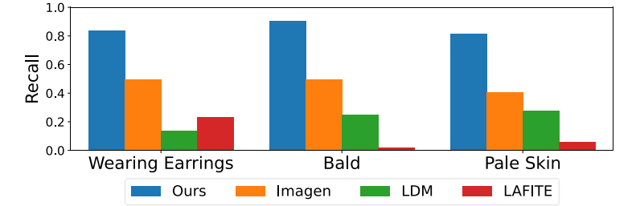
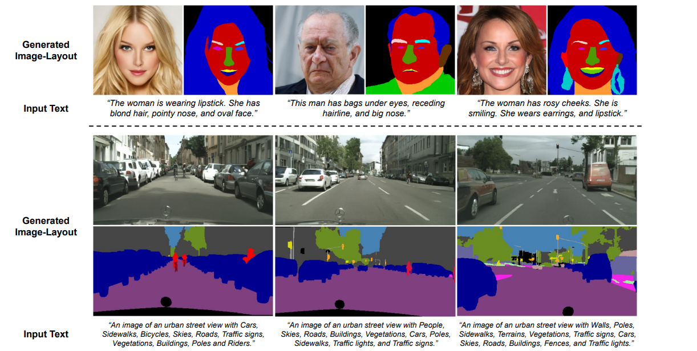
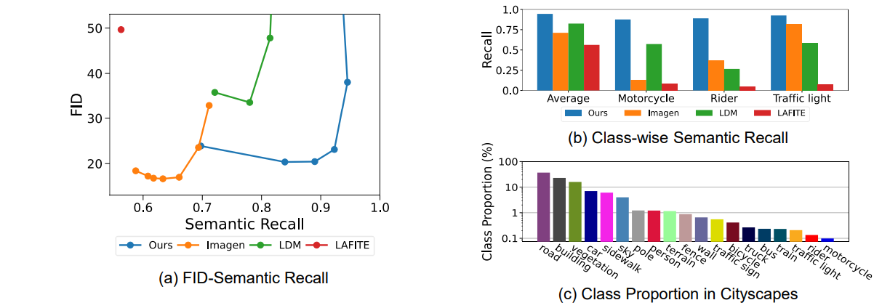
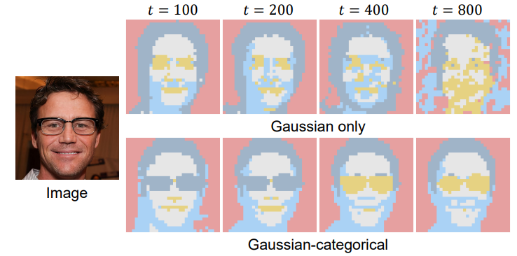
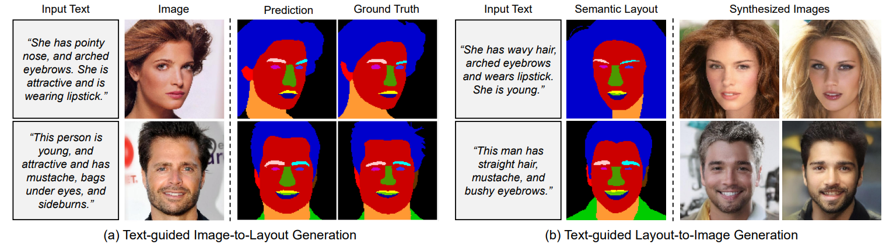

Existing text-to-image generation approaches have set high standards for photorealism and text-image correspondence,
largely benefiting from web-scale text-image datasets, which can include up to 5 billion pairs. However,
text-to-image generation models trained on domain-specific datasets, such as urban scenes, medical images, and
faces, still suffer from low text-image correspondence due to the lack of text-image pairs. Additionally,
collecting billions of text-image pairs for a specific domain can be time-consuming and costly.
Thus, ensuring high text-image correspondence without relying on web-scale text-image datasets remains a challenging
task. In this paper, we present a novel approach for enhancing text-image correspondence by leveraging available
semantic layouts. Specifically, we propose a Gaussian-categorical diffusion process that simultaneously generates
both images and corresponding layout pairs. Our experiments reveal that we can guide text-to-image generation models
to be aware of the semantics of different image regions, by training the model to generate semantic labels for each
pixel. We demonstrate that our approach achieves higher text-image correspondence compared to existing text-to-image
generation approaches in the Multi-Modal CelebA-HQ and the Cityscapes dataset, where text-image pairs are scarce.
ICCV, 2023.
Minho Park, Jooyeol Yun, Seunghwan Choi, and Jaegul Choo.
"Learning to Generate Semantic Layouts for Higher Text-Image Correspondence in Text-to-Image Synthesis"
Introduction

Recall of facial attributes specified in the text descriptions. Text-to-image generation approaches trained
on a subset of the Multi-Modal CelebA-HQ often fail to reflect text conditions. Facial attributes are
classified with a pretrained attribute classifier.
Visualization of a Gaussian-categorical distribution with a single variable
($N = 1, M = 1, K = 4,$ and $S = 4$).
Gaussian-categorical Diffusion Process
Illustration of the Gaussian-categorical diffusion process on the image-layout distribution of MM CelebA-HQ.
We define a Gaussian-categorical diffusion process for modeling joint image-layout distributions, which is
the first approach to unify two diffusion processes for image-layout generation.
Derivation of the objective function is available in the paper.
Qualitative results

Examples of text-guided generation of image-layout pairs from the Gaussian-categorical diffusion trained on
MM CelebA-HQ100 and Cityscapes. The text descriptions on the bottom are given as conditions to generate the
image-label pairs.
Quantitative results

(a) FID-Semantic Recall trade-off in the Cityscapes dataset. (b) Semantic Recall for minor classes. Semantic
Recall is measured using the HRNet-w48 model. (c) Proportion of each semantic class in the entire Cityscapes
dataset. Class proportion is compared in log-scale for visibility.
Analyzing the internal representation

Visualization of clustering results between the internal features of the Gaussian-categorical diffusion and
the Gaussian diffusion.
Cross-modal outpainting

Cross-modal outpainting for (a) text-guided image-to-layout generation and (b) text-guided layout-to-image
generation. Segmentation layouts are generated with $n = 1$ resampling steps and images are generated with
$n = 5$ resampling steps for each timestep.
Citation
@article{park2023learning,
title={Learning to Generate Semantic Layouts for Higher Text-Image Correspondence in Text-to-Image Synthesis},
author={Park, Minho and Yun, Jooyeol and Choi, Seunghwan and Choo, Jaegul},
journal={arXiv preprint arXiv:2308.08157},
year={2023}
}